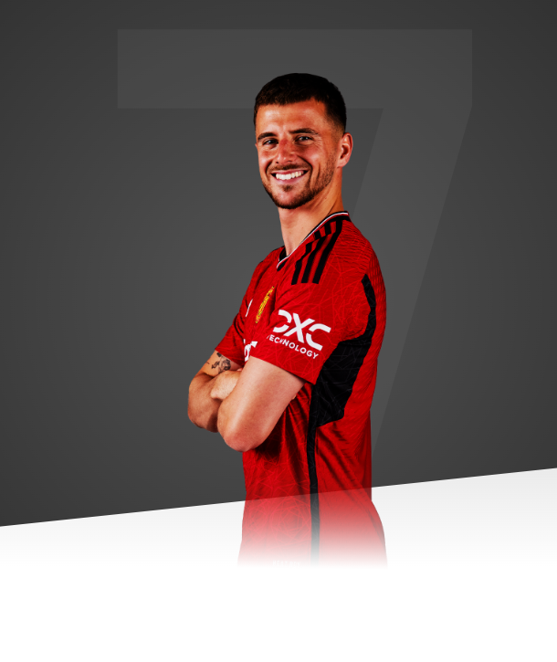

I couldn’t be more excited for the seasons ahead and am ready for the hard work expected here.

AGE
24
APPEARANCES
6
CLEAN SHEETS
0
BIOGRAPHY
England international and Champions League winner signed from Chelsea in July 2023.
A Portsmouth-born lad, Mount joined Chelsea's youth academy aged just six
He made his debut for the Blues' Under-18s as a 15-year-old in 2014, and it was clear the midfielder was destined for big things.
In 2016, Mason helped Chelsea's Under-18s win the FA Youth Cup and played a key role in their Under-19s' UEFA Youth League triumph. The following year, Mount won the Under-18 Premier League and his second consecutive FA Youth Cup with Chelsea, also tasting success in the Under-19s Euros with England.
In the final against Portugal, the midfielder provided the assist for Lukas Nmecha's winning goal and was also named the Golden Player of the tournament, marking him out as a player for the big stage.
Loan moves to Dutch side Vitesse Arnhem and Derby County aided Mount's development in the 2017/18 and 2018/19 seasons, with his year in the Eredivisie coinciding with Erik ten Hag's first campaign at the helm of Ajax.
With 14 goals and 10 assists in 39 appearances for Vitesse, a 19-year-old Mason was named the club's supporters' Player of the Year.
The following season, under the tutelage of Chelsea great Frank Lampard, Mount made his mark on English football, with Derby in the Championship.
The midfield maestro made 44 appearances in all competitions for the Rams, scoring 11 goals and assisting six times as they reached the play-off final before being narrowly beaten by Aston Villa.
The 2019/20 campaign was the season where Mount announced himself in the Premier League.
Coincidentally, the midfielder made his Premier League debut at Old Trafford on 11 August 2019, in a match that United won 4-0.
A month later, Mount was awarded his maiden senior England cap in a 4-0 Euro 2020 qualifying victory over Bulgaria.
Despite his inaugural top-flight campaign being disrupted by the Covid pandemic, he became the first Chelsea academy graduate ever to make his debut and record 50 appearances in the same season.
Barely into his 20s, Mount played a pivotal role as Chelsea marched all the way to the Champions League final
His goals against Porto and Real Madrid were crucial in the Blues' European campaign, as Thomas Tuchel's side toppled Manchester City 1-0 in the final to claim what was the midfielder's first-ever senior trophy for his club. After stellar displays throughout 2020/21, Mount was crowned Chelsea's Player of the Year.
That summer, Mason formed part of England's Euro 2020 squad - the tournament was delayed by a year due to Covid - alongside United's Luke Shaw, Harry Maguire, Marcus Rashford and Jadon Sancho (then at Borussia Dortmund). The Three Lions went all the way to the final, but were narrowly defeated on penalties by Italy at Wembley.
A second consecutive Player-of-the-Year award would follow in 2021/22, as Mason contributed to Chelsea's UEFA Super Cup and FIFA Club World Cup successes, finished 19th in the Ballon d'Or rankings, and recorded his 100th Premier League appearance.
Last term, as Chelsea experienced a transitional season both on and off the pitch, Mount and his team-mates struggled to gain momentum and ultimately finished 12th in the Premier League. He was, however, selected by Gareth Southgate for England's 2022 World Cup squad during the winter.